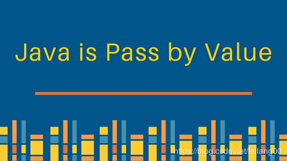
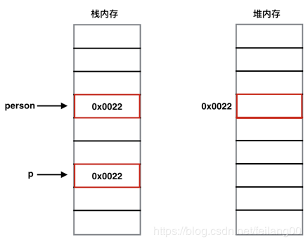

Java 编程语言中最大的困惑之一就是： java 是按值传递还是按引用传递。我在面试中经常会问面试者这个问题，但还是有很多面试者对这个问题的理解不是很正确。

有很多面试者是这样理解的：
这样的理解正确吗？他们甚至还可以写出示例代码来验证他们的想法，让我们来一起看一看大多数人是如何验证“基础类型按值传递，非基础类型按引用传递”这个想法的：
基础类型数据作为参数传递
/**
* 基础类型数据作为参数传递
* @Author: danding
* @Date: 2019/11/5
*/
public class TestParams {
public static void main(String[] args){
int x = 6;
System.out.println("x的初始值为：" + x);
add(x);
System.out.println("x的最终值为：" + x);
}
public static void add(int x){
x = x + 1;
System.out.println("add 方法中的x值为：" + x);
}
}
运行结果：
x的初始值为：6
add 方法中的x值为：7
x的最终值为：6非基础类型作为参数传递
首先我们定义一个类
/**
* 定义一个女朋友的类
* （简陋了点，只有年龄，但不影响我们使用呀）
* @Author: danding
* @Date: 2019/11/5
*/
public class GrilFriend {
private int age;
public GrilFriend(int age) {
this.age = age;
}
public int getAge() {
return age;
}
public void setAge(int age) {
this.age = age;
}
}
然后我们将创建实例并作为参数传递
/**
* 基础类型数据作为参数传递
* @Author: danding
* @Date: 2019/11/5
*/
public class TestParams {
public static void main(String[] args){
GrilFriend gril = new GrilFriend(18);
System.out.println("女朋友的初始年龄为：" + gril.getAge());
add(gril);
System.out.println("女朋友的最终年龄为：" + gril.getAge());
}
private static void add(GrilFriend friend){
friend.setAge(friend.getAge()+1);
System.out.println("女朋友在方法中的年龄为：" + friend.getAge());
}
}
运行结果：
女朋友的初始年龄为：18
女朋友在方法中的年龄为：19
女朋友的最终年龄为：19非基础类型作为参数传递时，值的确被修改了。
这个时候很多同学通过以上两个示例验证，自己就得出了自己的结论：
如果传递类型为基础数据类型，则按值传递，否则为按引用传递。
在此说明，这个理解是错误的，错误的，错误的。下面我们就来说说 Java中的参数传递到底是按值传递还是按引用传递？
首先说下正确的答案：Java 的参数传递，不管是基本数据类型还是引用类型的参数，都是按值传递，没有按引用传递！
首先，我们应该了解按值传递或按引用传递的含义。
你个糟老头子坏得狠，我信你个鬼，你这个解释给我要给差评.....
且听老夫（哦，不，是小编）慢慢道来...
当一个对象被当作参数传递到一个方法后，在此方法内可以改变这个对象的属性，那么这里到底是「按值传递」还是「按引用传递」?
答：是按值传递。Java 语言的参数传递只有「按值传递」。当一个实例对象作为参数被传递到方法中时，参数的值就是该对象的引用的一个副本。指向同一个对象，对象的内容可以在被调用的方法内改变，但对象的引用(不是引用的副本) 是永远不会改变的。
这个上面的示例已经验证了，为按值传递，这个大家应该不会有什么异议。
我们重点来说下对象类型作为参数传递
先来看一下传递的例子：
public class TestParams {
public static void main(String[] args){
Person p1 = new Person();
System.out.println(p1);
change(p1);
System.out.println(p1);
}
private static void change(Person p2){
p2 = new Person();
}
}
class Person{
}运行结果
Person@677327b6
Person@677327b6可以看出两次打印person的地址值是一样的，即调用完change() 方法之后，person变量并没有发生改变。
这个传递过程的示意图如下：

当执行到Person p1 = new Person();代码时，程序在堆内存中开辟了一块内存空间用来存储Person类的实例对象，同时在栈内存中开辟了一个存储单元用来存储该实例对象的引用，即上图中person指向的存储单元。
当执行到change(p1);代码时，person作为参数传递给change()方法，需要注意的是：person将自己存储单元的内容传递给了change()方法的p2变量！此后，在change()方法中对p2的一切操作都是针对p2所指向的存储单元，与person所指向的那个存储单元没有关系了！
这个时候该有同学说了，那上面那个女朋友示例中，女朋友的年龄不是被在方法中修改了吗？如果传递的是副本那不应该修改不了女朋友的年龄吗？
如果我们将女朋友中的代码放到内存示例图中走一遍，你应该就明白其中的道理了。
所谓引用副本，但其所指向的还是真实的对象，所以修改的还是真实对象上的属性。
我希望上面的解释能消除所有疑问，只需要记住Java 的参数传递，不管是基本数据类型还是引用类型的参数，都是按值传递，没有按引用传递！。当您将了解堆空间和栈内存以及存储不同对象和引用的位置时，将会更加清楚，有关程序的详细说明，请阅读 Java Heap vs Stack。
“不积跬步，无以至千里”，希望未来的你能：有梦为马 随处可栖！加油，少年！
关注公众号:「Java 知己」，每天更新Java知识哦，期待你的到来！